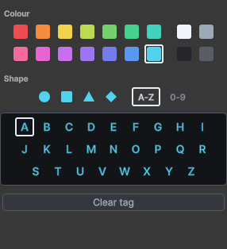
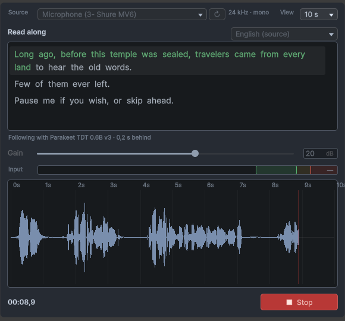
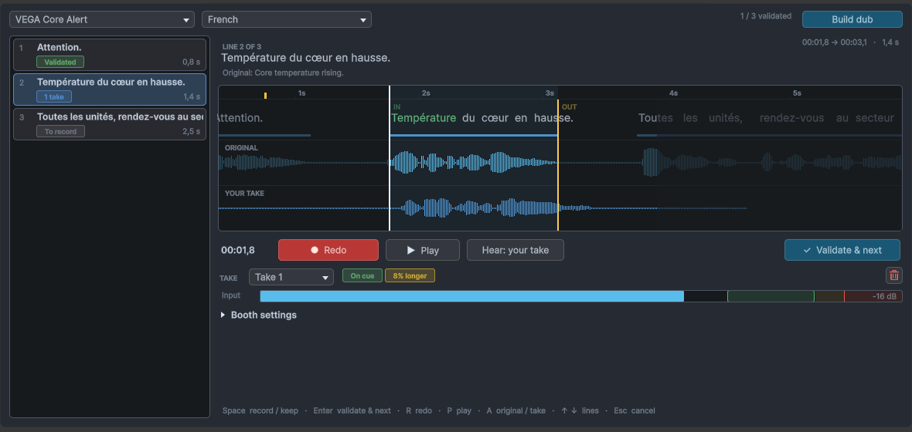
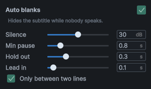
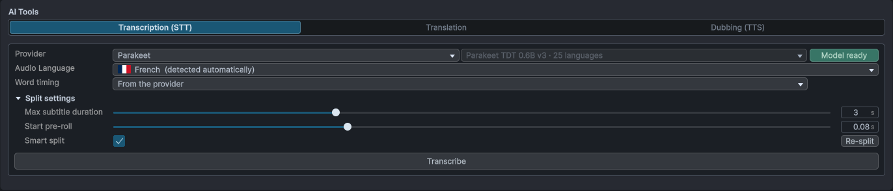
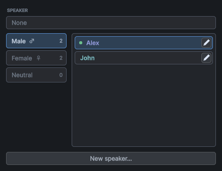
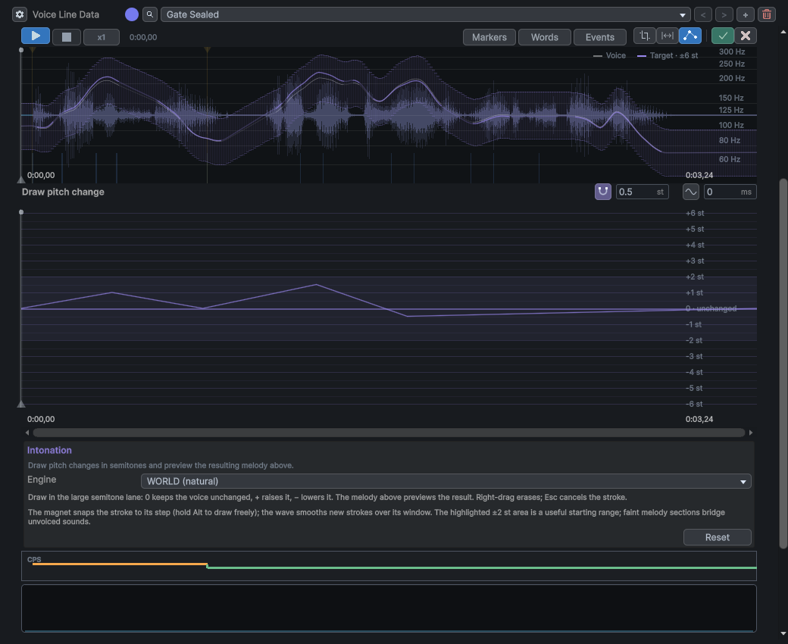
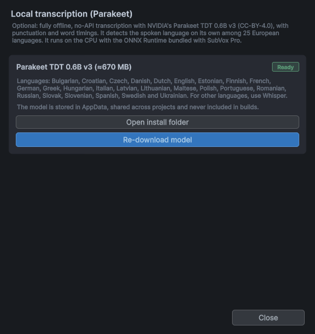
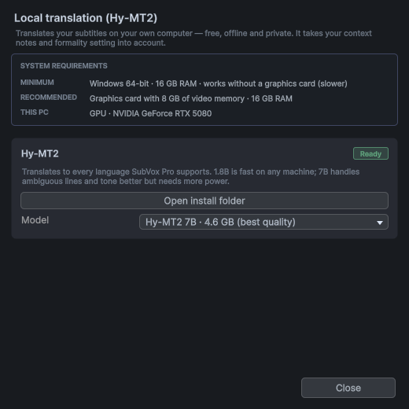

SubVox Pro
SubVox Proを使うと、Unity内で直接、ボイスラインから音声と同期した字幕や吹き替え音声を作成できます。
- 文字起こし：クラウドサービスを利用するか、完全にオフラインで、オーディオクリップをタイミング情報付き字幕に変換します。
- 編集：波形上でタイミングを調整し、単語のスタイルを設定し、字幕の読み取り速度を確認します。
- 翻訳：48言語に翻訳し、音声合成で吹き替えを作成します。必要に応じて、各キャラクター固有の声も使用できます。
- 再生：少数のコンポーネントでゲーム内の字幕と音声を再生し、ボイスラインからゲームプレイイベントをトリガーし、ボイスラインを Unity Timelineにドラッグ＆ドロップします。
クリップ、録音、.srt、.txt
タイミング付き字幕
マーカー、単語、スタイル
48言語
音声合成、クローン音声
コンポーネント、イベント、Timeline
オーディオからでもテキストからでも始められます。必要なステップだけを使ってください。
目次
- 開始する前に
- クイックスタート
- SubVox Proのウィンドウ
- 文字起こし
- 翻訳
- 音声合成による吹き替え
- 話者と声の個性
- オーディオの編集
- ゲーム内でのボイスラインの再生
- ボイスラインからゲームプレイをトリガーする
- Unity Timeline
- 複数のファイルを一度に処理する
- AIアシスタントと連携する
- オフラインエンジン（アカウント不要、APIキー不要）
- Google Sheetsを使った人手による翻訳
- 設定
- キーボードとマウス
- 対応言語
- データとオンラインサービス
- ゲーム内で使用するAI生成音声
- ファイルの保存先
- 更新とアンインストール
- トラブルシューティング
- サポート
各サービスのアカウントとAPIキーの取得方法は、 プロバイダーの設定で手順を追って説明しています。
開始する前に
- Unity 2022.3 LTS以降（Unity 6を含む）。レンダーパイプラインはBuilt-in、URP、HDRPのいずれも使用できます。
- TextMesh Pro — プロジェクトにまだインポートしていない場合は、TMP Essentialsを一度インポートします。Unity 2022.3では、まず Package ManagerからTextMeshProパッケージをインストールします（Unity 6にはすでに含まれています）。
- Unity Timelineは任意です。パッケージをインストールすると、Timelineの機能が表示されます。
- ゲーム内では、SubVox ProはUnityがサポートするすべてのプラットフォームで動作します。
- エディター内では、SubVox ProはWindowsで動作確認済みです。自分のAPIキーを使用するクラウドサービスは、 macOSおよびLinuxのエディターでも動作すると考えられますが、まだ検証していません。オフラインエンジン（アカウント不要の文字起こし、翻訳、吹き替え）を利用するには、Windowsのエディターが必要です。
クイックスタート
1つのオーディオクリップから、数分で画面上に音声と同期した字幕を表示できます。
Hub
SubVox Proのすべての機能には、Tools ▸ SubVox Pro ▸ Hubからワンクリックでアクセスできます。9個のタイルから、ボイスラインエディター（およびバッチ処理）、Dub Booth、Google Sheets、AIアシスタント用のMCPサーバー、追加のオフラインモデル、プロバイダーの比較、ドキュメント、サンプルシーン、設定を開けます。

Voice Line Editorを選択すると2つ目の画面が開き、Voice Line Editor本体と、複数のファイルを一度に処理するBatch Processingを選べます（Backでタイルに戻ります）。Documentationを選択すると、別の画面が開きます。
| ボタン | 開くもの |
|---|---|
| Online | このサイト：ガイド、プロバイダーのガイド、スクリプトリファレンス（英語、フランス語、ドイツ語、日本語、簡体字中国語に対応） |
| Local | オフラインで利用できる英語のPDF |
| Provider Setup | 同じPDFのProvider Setupセクションを直接開く |
| Video Tutorials | YouTubeのSubVox Proチュートリアル |
| Discord | 質問したり作品を共有したりできるコミュニティサーバー |

5つのステップ
1. 文字起こしの方法を選択します。音声認識サービスのAPIキーを Tools ▸ SubVox Pro ▸ Settingsに貼り付けるか（取得方法はこちら）、WindowsではWhisperまたは Parakeetを使用します。これらは無料でオフラインで動作します（初回利用時にモデルのダウンロードを案内します）。
2. ボイスラインを作成します。 Assets ▸ Create ▸ SubVox Pro ▸ Voice Lineで作成し、そのアセットを選択して、InspectorのEdit Voice Line をクリックします。新しいボイスラインのSubVox Proウィンドウが開きます。Language（初回は英語、その後は前回選択した言語）を確認し、Add an audio trackを選択してクリップを指定するか、音声を録音します。
または、Projectウィンドウでオーディオファイルを右クリックし、SubVox Pro ▸ Create Voice Lineを選択します。新しいボイスラインの保存先を選択すると、そのオーディオが割り当てられた状態でエディターが開きます。

3. 文字起こしします。 AI Tools ▸ Transcriptionでプロバイダーと音声の言語を選択し、Transcribeをクリックします。字幕が波形上に表示されます。
4. 調整します。波形上のマーカーをドラッグし、下のリストでテキストを修正して、Spaceを押して音声を確認します。
5. ゲーム内で表示します。 [SubVox Pro]とSubtitle Displayerのプレハブ（SubVoxPro/Prefabs）をシーンにドラッグ＆ドロップし、ボイスラインを再生します。
using SubVoxPro;
SubVox.Play(myVoiceLine);
まず動作を確認してみたい場合は、Hub の Examples（または Tools ▸ SubVox Pro ▸ Example Scenes）を開き、Playを押します。4 言語のボイスライン、吹き出し、会話シーケンス、ボイスイベント、字幕オプションを備えた 4 つのサンプルシーンがあります。
- 3D の神殿
- 2D のネオンステーション
- ノワール調のビジュアルノベル
- 機能ごとにスタンドが並ぶ一人称視点のサンドボックス
SubVox Proのウィンドウ

Tools ▸ SubVox Pro ▸ Voice Line Editor、またはボイスラインのInspectorにあるEdit Voice Lineから開けます。上から順に説明します。
- Voice Line Data — 編集中のボイスラインです。新規作成、他のボイスラインの参照、分割、削除用のボタンがあります。色付きのドットは、Projectウィンドウのアセットアイコンに表示されるタグで、ボイスラインの分類に使います。サンプルシーンのボイスラインは、リストの最後にある折りたたまれたExamplesフォルダーに分けて表示されます。
- Source — AUDIOとSUBTITLESのセレクターです。各ボイスラインには1つのソース言語（旗アイコン。クリックすると変更できます）があり、翻訳または吹き替えされた言語ごとに1つのトラックがあります。2つのセレクターは独立しているため、例えば英語の音声を聞きながらフランス語の字幕を読むこともできます。
- AI Tools — 文字起こし、翻訳、吹き替え（下記）です。
- Timeline — 字幕のマーカーが表示された波形です。各マーカーは字幕の開始位置を示します。テキストのないマーカーは画面の字幕を消去します（空白）。マーカーはオーディオに属します。ソースと各吹き替えは、それぞれの音声上に独自のマーカーを持ちます。
- Live preview — 再生ヘッドの位置にある字幕を、ゲーム内と同じ見た目で表示します。その上にある色やスタイルを選択し、単語の上をドラッグして適用します（右ボタンを押しながらドラッグすると消去します）。
- Subtitles — 字幕ごとに1行ずつ、名前、長さ、話者、テキスト、再生ボタンが表示されます。
タグと言語
Voice Line Dataの横にあるタグをクリックして、色と形状を選択します。Clear tagでタグを削除できます。形状を使うと、色だけに頼らずにボイスラインを区別できます。A-Zまたは0-9をクリックすると、英字や数字を形状として使用できます。

ソース言語の旗アイコンをクリックして、音声の言語を選択します。
- 旗アイコンは言語を示し、話者の国籍を示すものではありません。ピッカーには言語名とコードが表示されるため、旗を見分けられなくても言語を選択できます。
- 翻訳または吹き替えですでに使われている言語はグレー表示になります。
- ソースの字幕を消去するには、SUBTITLESセレクターのソース行にある×を使います。

オーディオなしで開始

ボイスラインは、オーディオではなくテキストから作成できます。「Add a subtitles track」を選択し、次のいずれかを選びます。
| 選択 | 結果 |
|---|---|
| .srtファイルをインポート | タイミング付きの字幕 |
| .txtファイルをインポート | 1行につき1つの字幕。読みやすい速度になるようにタイミングが自動設定されます |
| 字幕を直接入力 | 自分で入力したライン |
ボイスラインの「Length」を設定します。オーディオを追加するか、テキストから吹き替え音声を生成するまでは、ゲーム内でその長さだけ再生されます。
オーディオの録音

「Record with a microphone」（「Add an audio track」内、またはAUDIOセレクターの横にある「+」から選択）を選択すると、小さな録音ウィンドウが開きます。
- マイクを選択し、レベルを確認します。レベルを調整するには、「Gain」の横の「Calibrate」をクリックし、3秒間ふだんどおりに話してください。
- 録音し、再生して確認します。
- 「Use recording」を選択します。録音した音声は、ボイスラインと同じフォルダーにWAV形式で保存されます。
macOSでは、システム設定でUnityによるマイクの使用を許可してください。
録音しながらテキストを読む

ボイスラインにすでに字幕がある場合、録音ウィンドウの「Read along」にその字幕が表示され、テキストを読みながら吹き替えを録音できます。読む言語をドロップダウンで選択します（または「Off」）。
話すと、認識された単語は緑に、飛ばされた単語は赤に変わります。テキストは1行ずつスクロールし、直前の行も表示されたままになります。
- すべてお使いのコンピューター上で無料で動作します。Parakeet またはローカルの Whisper モデルが必要です（Tools ▸ SubVox Pro ▸ Additional Models）。複数インストールされている場合は、言語の横のメニューで使用するものを選択します。
- 「Retake」を押すとテイクを破棄し、すぐに録音をやり直します。
- 「Listen」は再生マーカーの位置からテイクを再生します。波形をクリックまたはドラッグするとマーカーを移動でき、「Stop」で止めた位置にマーカーが残ります。Spaceキーでも再生と停止を切り替えられます。
- 「Stop」の後、テイク全体がもう一度確認されます。実際に言った赤い単語はクリックして承認できます。
- 「Use recording」を選択すると、いつもどおり（トラックの置き換えまたは吹き替えの追加）テイクが追加され、各単語のタイミングはテイクから設定されます。Qwen3 の単語タイミングがインストールされている場合は、それがタイミングを精密化します。「Undo」で以前のタイミングに戻せます。
原音に合わせて吹き替える（Dub Booth）

Dub Booth は、声優と同じやり方で吹き替えを録音します。原音の演技に重ねて1ラインずつ録音するので、テイクは元のラインと同じ位置に収まります。+ Add audio ▸ Dub over the original、Hub、または Tools ▸ SubVox Pro ▸ Dub Booth から開きます。原音がマイクに入らないよう、ヘッドホンを使用してください。
ラインを録音する
まず
カウントダウン
4拍目
ラインの終わり
- ボイスラインと吹き替える言語を選択します。Original (ADR) を選ぶと元の言語を録り直します。
- Space を押します。ラインの数秒前から原音が再生され、3回のビープでカウントダウンし、4拍目（無音）で録音が始まります。テキストは IN と OUT のマークの間で、再生ヘッドの下を単語ごとに流れます。
- テイクはラインの終わりで自動的に止まります（または Space を押します）。
- バッジに、タイミングどおりに入れたか（on cue）、原音よりどれだけ長いか（longer）短いか（shorter）が表示されます。バッジにカーソルを合わせると両方の長さが表示されます。
- 録音中に失敗したら、Discard（または Esc）で終わりを待たずにそのテイクを破棄できます。
- 聞いて比べるか（下の表を参照）、Redo で録り直します。
- Validate & next（または Enter）でテイクを確定し、次に録音するラインへ進みます。Unvalidate で確定を取り消せます。
- Build dub は確定したテイクを原音のタイムライン上に配置し、その言語の吹き替えとして追加します（Original (ADR) の場合は Replace original）。その後、モデルをインストールしなくても、単語のタイミングが 1 行ずつテイクに合わせて設定されます。さらに正確なタイミングが必要な場合は、Qwen3 の単語タイミング（Additional Models）をインストールしてください。
テイクを聞いて比べる
| 操作 | 機能 |
|---|---|
| Play | テイクを原音と同期して再生します |
| Play の隣のメニュー | This line、With previous line（修正したテイクが前のラインと自然につながるか確認）、All lines。それぞれ確定したテイクで再生します |
| スピーカーアイコン（ORIGINAL、YOUR TAKE） | 聞く音を選びます。A で両者を切り替えます |
| Redo（または R） | 別のテイクを録音します。テイクはすべて保持されます |
| TAKE | テイクを選び直します。確定したテイクには ✓ が付きます |
| TAKE の隣のゴミ箱 | 選択中のテイクを削除します（新しいテイクには空いている最小の番号が付きます） |
ラインが長すぎる、または短すぎる場合
- Shorten：翻訳は原文より 20〜30% 長くなりがちです。原音の時間内に言い切るのが難しいラインでは、録音前にテキストの下に注意が表示されます。Shorten は翻訳プロバイダー（OpenAI、Claude、Gemini、DeepSeek）に、同じ意味でその時間に収まる短いラインを依頼します。Undo で元のテキストに戻せます。
- Fit to original：バッジの隣にあり、声の高さを変えずにテイクを最大 10% 伸縮し、原音と同時に始まるよう位置を合わせます。結果は新しいテイクとして追加され、そのまま確定できます。10% を超えてずれている場合は録り直してください。それ以上伸縮すると不自然に聞こえます。
複数のラインを一度に録音する
ラインリスト上のメニューで、1 回の録音の範囲を選べます。
| 選択 | 録音する範囲 |
|---|---|
| Record one line | 選択したライン |
| Record several lines | クリックしたラインから Shift + クリックしたラインまで |
| Record all lines | 選択したラインから最後まで |
複数のラインは自然なペースで一度に録音され、ラインごとのテイクに分割されます。
設定と保存
- Booth settings では、マイク、ゲイン（Calibrate は録音ウィンドウと同じ動作）、ラインの前に再生する原音の長さ、ビープ、録音中に聞こえる音、スクロール速度（最小値：ラインが収まらない場合はテキストが速く流れます）を設定できます。
- テイクは随時保存されます。ウィンドウを閉じても、後で続きから再開できます。
独自の吹き替えの追加
録音済みの吹き替えがある場合は、AUDIOセレクターの横にある + をクリックし、クリップを選択または録音します。続いて、その言語を尋ねるウィンドウが表示されます。
- Replace a track：元のオーディオまたは既存の吹き替えと置き換えます。
- Add a new track：言語を選択して、新しい吹き替えとして追加します。
ラインは新しいオーディオ上に比例配置されます（テキストを読みながら録音した場合はテイクからタイミングが設定されます）。マーカーをドラッグして微調整してください。その言語の翻訳済みラインがある場合は、吹き替えに重ねて表示されます。
別の言語の字幕をインポートする
SUBTITLESセレクターの横にある+で.srtまたは.txtファイルをインポートできます。すでに内容のあるボイスラインでは、ファイルの言語を尋ねるウィンドウが開きます。
- Replace a track：元の字幕（ファイルのタイミングを使用）または既存の翻訳を置き換えます。
- Add a new track：言語を選択して、新しい翻訳として追加します。
翻訳は元のラインのタイミングを保持します。インポートされた各ラインは同じ位置にある元のラインに割り当てられます。ライン数が異なる.srtの場合は、その時刻に再生されている元のラインに割り当てられます。
字幕の確認
- 「Show CPS」（「Settings」内）を有効にすると、各字幕の読み取り速度が表示され、速すぎる字幕が示されます。
- 「Check Subtitles」（「Show CPS」を有効にすると表示されます）では、空の名前や重複した名前、クリップの時間範囲外にある字幕、字幕の重なり、速すぎて読み切れない字幕などの問題を1つずつ順に確認し、ワンクリックで修正できます。すべての操作は元に戻せます。
- 「Auto blanks」は、誰も話していない間、マーカーを追加せずに字幕を非表示にします。ポップアップで有効にし、非表示にする無音区間の長さを調整します。字幕が非表示になる区間は、波形上で網掛け表示されます。
- 「Export SRT」は、字幕を
.srtファイルとして保存します。

| Auto blanksの設定 | 機能 |
|---|---|
| Silence | 無音区間と判定するために、声よりどの程度音量が小さい必要があるか |
| Min pause | ごく短い無音区間を無視します |
| Hold out | 声が止まった後もテキストを短時間表示し続けます |
| Lead in | 発話が再開する前にテキストを再び表示します |
| Only between two lines | 文の途中で字幕が消えたり再表示されたりするのを防ぎます |
SYNCチップ
「Subtitles」リストの各行の先頭、「SYNC」列には、その字幕の状態を示す色付きのチップが表示されます。チップにカーソルを合わせると詳細が表示されます。クリックできるチップでは、クリックしたときの動作もツールチップに表示されます。
原文の字幕では、チップは単語が音声にどの程度正確に合わせられているかを示します。

| チップ | 意味 | 対処 |
|---|---|---|
| SYNC | すべての単語が音声に合わせられており、話された瞬間に表示されます。 | 不要です。 |
| FIX n | n 個の単語は音声から聞き取れなかったため、推定のタイミングになっています。 | 波形上の単語マーカー（「Words」モード）を確認し、必要に応じて移動してください。 |
| TEXT + | 単語のタイミングがないため、字幕全体が一度に表示されます。 | チップをクリックすると、テキストから各単語のタイミングを推定します。推定値なので、その後は「FIX」と表示されます。 |
| BLANK | テキストのないマーカーです。次の字幕まで画面の字幕を消します。 | 不要です。 |
翻訳（SUBTITLESセレクターで言語を選択）では、チップはその字幕が原文と吹き替え音声にまだ一致しているかを示します。

| チップ | 意味 | 対処 |
|---|---|---|
| FR | 言語コード（FR、EN-USなど）：翻訳は最新です。ツールチップには、吹き替え音声が最新かどうかも表示されます。 | 不要です。 |
| OUT | 翻訳後に原文の字幕、またはその翻訳メモが変更されました。 | 「Synchronize translations」（Translationタブ）をクリックして再翻訳するか、字幕を確認した後でチップをクリックして最新としてマークします。 |
| CUT | 原文のマーカーが移動したため、翻訳された字幕が自動的に分割し直され、表現の途中で区切られている可能性があります。 | 「Fix splits」（Translationタブ）をクリックしてAIで分割し直すか、チップをクリックして現在の区切りを維持します。 |
| REGEN | 吹き替え音声がその字幕と一致しなくなりました。テキスト、声、パーソナリティ、サウンド、グループ、プロバイダー、モデル、生成モードのいずれかが変更されたか、一度も吹き替えられていません。 | カーソルを合わせると理由が表示され、クリックすると必要な部分だけが再生成されます。 |
| DUBBING | この字幕の吹き替え音声を生成中です（チップがアニメーションします）。 | お待ちください。 |
1行に表示されるチップは1つだけです。優先順位は次のとおりです。
「BLANK」の行には常に「BLANK」が表示されます。
ボイスラインの削除
ごみ箱ボタンでボイスラインを削除します。関連するファイルが一覧表示されます。SubVox Proが生成したファイル（吹き替え音声、録音）は選択済みで、自分で用意したファイルは選択されていません。他で使用中のファイルはロックされています。削除した項目はすべてシステムのごみ箱に移動するため、復元できます。
ボイスラインの分割
1つのボイスラインに、別々に再生したい場面が複数含まれている場合は、分割ボタン（ごみ箱の隣）で複数のボイスラインに分けられます。
- 2つの字幕の間をクリックしてそこで分割します。分割位置は常に2つの字幕の間、その間の無音部分に置かれます。
- 必要なだけ分割位置を追加します。
- 新しいボイスラインに名前を付けます。
各パートの扱い：
- 各パートには、その字幕に属するすべてが引き継がれます：音声、翻訳、吹き替え、話者、オーディオエフェクト、イベント。
- 最初のパートは現在のボイスラインに残るため、シーンやTimelineからの参照はそのまま有効です。他のパートはその隣に作成されます。
- 各パートには専用の音声ファイルが作られ、元のファイルは保持されます。
- 分割は元に戻せません。
文字起こし

- 「Provider」を選択し、そのプロバイダーが複数のモデルを提供している場合は「Model」を選択します。右側のバッジには、準備が整っているかどうか（キーが設定済み、またはモデルがダウンロード済み）が表示されます。
- 「Audio Language」を確認します。言語は選択中のオーディオトラックの旗に従います。ソース音声の場合はクリックして言語を変更できます。プロバイダーがその言語を文字起こしできない場合はフィールドが赤くなり、対応しているプロバイダーが表示されます。ソースにまだ言語がない場合は、リストから選びます（一部のプロバイダーは自動的に検出します）。
- 「Transcribe」をクリックします。オーディオが単語に変換され、そのまま字幕にまとめられます。「Split settings」では、字幕の最大表示時間、最初の単語が発話されるどれくらい前に字幕を表示するか、字幕の区切りを句読点に合わせるかどうかを設定します。ボイスラインに既に字幕がある場合は、置き換える前に確認が表示されます。
- 区切り方が気に入らない場合は、「Split settings」を変更すると、「Smart split」の行の右端に小さな「Re-split」ボタンが表示されるので、それをクリックします。同じ単語が再びまとめられ、文字起こしをやり直す（費用がかかる）必要はありません。
単語のタイミング
「Word timing」では、各単語のタイミングの取得元を選択します。
| オプション | 機能 |
|---|---|
| From the provider（デフォルト） | 文字起こしによって返されたタイミングをそのまま保持します。 |
| Built-in aligner | 字幕に区切る前に、オーディオに合わせて各単語のタイミングを再調整します（区切りが実際の間に合うように）。インストール不要で、すべての言語に対応します。 |
| Qwen3 aligner (local) | 同様の処理で、単語単位の字幕に最も正確なタイミングを提供します（初回のみインストールが必要です）。Qwen3が対応していない言語の場合は、プロバイダーのタイミングがそのまま使用されます。 |
アライナーがテキストを変更することはありません。この行の右端にある「Re-align」ボタンはどちらのアライナーでも使えます（「From the provider」ではグレー表示）。単語を修正したり区切り位置を手動で移動したりした後にクリックすると、テキストと区切り位置を保ったまま、単語のタイミングをオーディオに合わせて再調整します。
プロバイダー
AssemblyAI、Gladia、Deepgram、Speechmatics、ElevenLabs、Rev AI、Cartesia、OpenAI、またはオフライン版のWhisperおよびParakeet。
選択に迷った場合は、「Tools ▸ SubVox Pro ▸ Provider Comparison」で、価格、無料プラン、商用利用、対応言語を並べて比較できます。

ヒント： OpenAIのgpt-transcribeは、単語のタイムスタンプを含まないテキストを返します。タイミングはクリップ全体にわたって推定されます。タイミングが重要な場合は、ローカルでのアラインメントを使用するか、単語のタイムスタンプを提供するプロバイダーを使用してください。
文字起こしは、AUDIOセレクターで選択されたオーディオに対して行われるため、吹き替え音声も文字起こしできます。
翻訳

- 「Provider」を選択します。DeepL、Google Translate、OpenAI、Claude、Gemini、DeepSeek、またはオフライン版のHy-MT2を選択できます。
- 「Target」で翻訳先の言語に1つ以上チェックを入れるか、プリセットを選択して複数言語の翻訳を一度に作成します。
- その言語で設定できる場合は、「Formality」で文体の丁寧さ（二人称の丁寧な表現またはくだけた表現）を設定します。
- 「Translate」をクリックします。言語ごとに個別のトラックが作成されます。SUBTITLESセレクターで切り替えられます。

「Target」ポップアップでは：
- 左側で好きなだけ言語にチェックを入れ、右側の「Save as preset」で保存すると再利用できます。
- プリセットを選択すると、1回の操作でプリセットに含まれるすべての言語に翻訳されます。
- 右側の列でプリセットの名前と言語を編集できます。
翻訳に役立つ情報の追加
曖昧な字幕は、コンテキストがあると翻訳の質が向上します。
- ボイスライン全体のコンテキスト（吹き出しボタン）。
- 必要に応じて、個々の字幕への注釈（リスト内の該当する字幕の吹き出しボタン）。
翻訳の同期
| 操作 | 翻訳された字幕の表示 | 対処 |
|---|---|---|
| 翻訳後に原文の字幕を変更した | OUT | 「Synchronize」をクリックすると、原文が変更された字幕のみが再翻訳されます。または、字幕を確認した後でバッジをクリックします。 |
| マーカーを移動して文の区切り位置を変更した | CUT | 「Fix splits」では、AIプロバイダーに、単語を変更せずに原文の区切りに意味上対応する位置で翻訳を分割するよう依頼します。 |
吹き替え音声も、変更後の区切りに自動的に合わせられます。すべてのチップについては「SYNCチップ」で説明しています。
音声合成による吹き替え

- SUBTITLESセレクターで吹き替えに使用する言語を選択します。
- AI Tools ▸ Dubbingで、ProviderとVoiceを選択します。ボイスの横にある▶ボタンをクリックすると、サンプル音声が再生されます。Use speakers' voicesを有効にすると、各字幕にその話者のボイスが使用されます。
- Generationモードを選択します（下の表を参照）。
- Generate 言語 audio track（例：Generate French audio track）をクリックします。吹き替え音声が新しいオーディオトラックとして追加され、その言語がアクティブなときに、元の音声の代わりに再生されます。
吹き替えは元の音声とまったく同じ長さにはならないため、独自のマーカーを持ちます。ソースのマーカーとは位置が一致せず、一方を動かしてももう一方は動きません。
音声を別の場所で使うには、Generateボタンの下にあるExport audio…をクリックします。現在の音声ファイルが、そのままの状態で、選択したフォルダーにコピーされます。
生成モード
| モード | 1テイクの単位 | ポイント |
|---|---|---|
| Each subtitle | 字幕ごと | 字幕単位で最も修正しやすい方式です |
| Per speaker | 同じキャラクターの字幕のまとまりごと | より自然な流れになります |
| All together | ボイスライン全体 | 最も自然な仕上がりになりますが、再生成する場合は全体がやり直しになります |
| Groups | 指定した単語 | 下記参照 |
グループモード
Groupsを選択すると、波形の上にあるGroupsツールが有効になります。各グループは、最初の単語に設定されたボイスと音声演技プリセットを使って1つのテイクとして読み上げられ、字幕テキストはグループの色で表示されます。最初は、1つのグループにすべてが含まれています。
| 波形上の操作 | 結果 |
|---|---|
| グループ内をドラッグ | 3つに分割され、新しいグループが中央に配置されます。開始位置や終了位置は字幕の途中にも設定でき、新しいグループには独自の色が割り当てられます。 |
| 2つのグループ間の境界線をドラッグ | 境界線が移動します。隣のグループ全体を越えるまで移動すると、そのグループが削除されます。マウスボタンを離す前にドラッグして戻すと復元されます。 |
| グループを右クリック | 削除され、隣接するグループがその範囲を引き継ぎます。 |
| ゴミ箱ボタン | すべてが再び1つのグループに統合されます。 |
グループは字幕の言語ごとに保存されます。
サウンド（笑い声、ため息、間など）
波形の上にあるSoundsツールで、ボイスが演じるサウンドを追加できます。好きな位置に置くと、最も近い2つの単語の間に送られます。サウンドはボイスにのみ送られ、字幕には表示されません。
| 波形上の操作 | 結果 |
|---|---|
| 中ボタンでクリック | サウンドを選ぶと、その位置にピルが表示されます。 |
| 左クリック | ほかのモードと同じく再生ヘッドを移動します。 |
| ピルをドラッグ | 自由に移動します。 |
| ピルを右クリック | 削除します。 |
| コピーボタン | 各行の同じ位置にほかの言語へ配置します。 |
| ゴミ箱ボタン | 現在の言語のサウンドを削除します。 |
- 字幕の言語ごとに独自のサウンドを持ちます。サウンドを追加・移動・削除すると、その行にREGENチップが付きます。
- リストには、選択中のプロバイダーが演じられるサウンドだけが表示されます（InWorld、ElevenLabs v3・v4、Gemini、Cartesia Sonic 3）。
- リストの下で独自の単語（例：giggles）を追加できます。追加した単語はライブラリに保存され、すべてのボイスラインで使えます。独自の単語を演じられるのはElevenLabs v3・v4とGeminiだけなので、ほかのプロバイダーでは表示されません。
- グレー表示のピルは、現在のプロバイダーが演じられないサウンドで、生成時にはスキップされます。
プロバイダー
| プロバイダー | 備考 |
|---|---|
| InWorld、ElevenLabs、Gemini、OpenAI、Google Cloud、Azure、Cartesia | オンラインサービス |
| Kokoro | オフライン、英語 |
| Chatterbox | オフライン、21言語、各キャラクターの声を維持 |
| Qwen3 TTS | オフライン、10言語、参照音声によるボイスクローニング、固定ボイス、ボイスデザイン |
| VoxCPM2 | オフライン、30言語、文章によるスタイル指定を併用できる参照音声によるボイスクローニング、ボイスデザイン |
オプション
Word timing — 吹き替えの単語の合わせ方：
- Qwen3 aligner (local)：単語を発話のタイミングに合わせて正確に表示します（初回のみインストール）。
- Built-in aligner：インストール不要で生成された音声に各単語を合わせます（精度はやや劣ります）。
- None：字幕を単語ごとに表示しない場合に使います。
行末のRe-alignボタンで、選択したオーディオ（吹き替えまたはソース）の単語を再度合わせられます。
Voice direction — 対応しているプロバイダーでは、ボイスの横にある吹き出しボタンで演技のトーンを指定します（例：落ち着いた口調、ささやき声）。
REGEN — 字幕の吹き替え音声が現在の設定と一致しなくなると（テキスト、ボイス、音声演技プリセットの変更など）、その字幕にオレンジ色のREGENチップが表示されます。カーソルを合わせると理由を確認でき、クリックすると必要な部分のみを再生成できます。
ボイスクローニング — ElevenLabs（有料プラン）、Chatterbox、Qwen Base、VoxCPM2では、Original voiceを選択すると、ソース音声から声をクローンし、各キャラクターをそれぞれの声で吹き替えられます。また、データフォルダー内の
Voicesフォルダーに配置したクリップから声をクローンすることもできます。使用する権利のある声のみをクローンしてください。
OpenAIなど一部のサービスでは、音声がAIで生成されたものであることをプレイヤーに開示する必要があります。詳しくは Provider Setupを参照してください。
話者と音声演技プリセット
話者

話者とはキャラクターのことです。字幕の前に話者固有の色で表示する名前と、吹き替え用のボイスを設定します。Assets ▸ Create ▸ SubVox Pro ▸ Speakerから、またはウィンドウ内の話者ピッカーで作成します。
- ボイスライン全体の話者はリスト上部のSpeakerフィールドで、個々の字幕の話者はその行で設定します。
- 話者のInspectorでは、Text-to-speech voicesでプロバイダーごとにボイスを選択し、すべての言語で使用するフォールバックのボイスと、必要に応じて言語ごとの上書き設定を指定します。
- Subtitle Displayer（またはSubtitle Document Displayer）では、Speaker Name Modeで名前を字幕の前に表示する（Inline）、字幕の上に表示する（Above）、表示しない（Hidden）のいずれかを選択します。話者ごとに独自のフォントも設定できます。Font (TextMeshPro)はSubtitle Displayer用、Font (UI Toolkit)はSubtitle Document Displayer用です。
- Keep Background Between Subtitlesを有効にすると、2つの字幕の間の空白区間では字幕パネルのみが表示されます。デフォルトで有効ですが、最初の字幕の前や最後の字幕の後の空白区間では、パネルも非表示になります。

話者ピッカーでは、キャラクターが性別ごとにグループ分けされています。鉛筆アイコンで既存の話者を編集し、New speakerで新しい話者を作成します。字幕ごとの上書き設定では、一番上の項目を選択すると、そのボイスラインのデフォルトの話者に戻ります。
音声演技プリセット
音声演技プリセットとは、再利用可能な演技指示のことです。怒り、ミステリアス、ささやきなどがあります。
- 話者の（New personality）から、またはAssets ▸ Create ▸ SubVox Pro ▸ Voice Personalityで作成します。
- 演技指示を自分で記述するか、感情と話し方、その強さ、話すテンポ、音量、声の高さ、滑舌を組み合わせて設定します。
- アイコンをクリックすると、約40種類のシンボル（感情、ムード、声、キャラクター）から1つを選択でき、リスト内で一目で識別できるようになります。
リスト内のチップから各字幕に音声演技プリセットを割り当てるか（Each subtitleモードの場合）、話者のデフォルト設定を使用します。
- 各プロバイダーは、対応できる範囲で、理解できる形式（文章による指示、オーディオタグ、話し方のスタイル）で設定を適用します。話すテンポのみを反映するものもあります。
- チップのツールチップには、選択したボイスで実際に反映される設定が表示されます。
- 音声演技プリセットが決めるのはセリフの演じ方で、誰が話すかではありません。声の年齢はボイスの説明で設定します（後述）。
オーディオの編集
タイムラインツールバーの右側にあるボタン（Crop、Time edit、Audio effects）で、オーディオ自体を編集できます。すべての編集は Ctrl+Z で元に戻せます。
Crop
開始点と終了点のハンドルをドラッグし、Apply crop をクリックします。ソースのオーディオファイルが上書きされるため、テイク全体が必要になる可能性がある場合は、そのコピーを保存しておいてください。
無音区間の挿入／セグメントの削除
|↔| ボタン。TTSの音声が2つの文をつなげて読み上げる場合に便利です。
- マウスの左ボタンを押しながらドラッグすると無音区間を挿入します。
- マウスの右ボタンを押しながらドラッグすると区間を削除します。
その位置より後の字幕、単語、イベントはオーディオに合わせて移動します。
Audio effects
Audio effects ボタンをクリックすると、エフェクトリストが開きます。適用済みのエフェクトが最初に表示されます。編集したいエフェクトを選択するか、×マークをクリックしてリセットし、削除します。

利用できるエフェクト：音量カーブ、フェード、ノーマライズ、コンプレッサー、リミッター、ノイズゲート、フィルター、イコライザー、電話・無線風エフェクト、ピッチ、イントネーション、パン、距離による音のこもり、ルームリバーブ。
- タイムライン上でエフェクトを適用する範囲を描画します。
- スライダーで適用方法を設定します。
- Apply effects をクリックします。
カーブの隅にある磁石アイコンは、ポイントを基準値、0、および隣接するポイントに揃えます（Alt キーを押しながらポイントを自由に配置できます）。

上の音量カーブは、選択した区間の音量だけを下げます。波形でタイミングを確認しながら、各ポイントでゲインを制御します。0 dB では、元の音量は変更されません。
SubVox Proは元のオーディオを保持するため、エフェクトは引き続き編集できます。
| ボタン | 結果 |
|---|---|
| Flatten | エフェクトを確定します |
| Discard | すべてのエフェクトを削除します |
Voice filter
ワンクリックで声全体を変化させます。Filter のドロップダウンメニューでフィルターを選び、Intensity で強さを設定します。
- Telephone（電話）
- Radio / walkie-talkie（ノイズとスケルチ音付きの無線）
- Robot（ロボット）
- Cathedral（大聖堂）：各単語のあとも響き続けますが、クリップの終わりで消えます。残響を聞かせるには、最後の単語のあとに短い無音を残してください。
- Behind a door（ドアの向こう）
- Monster（モンスター）
- Inner voice（心の声）
フィルターはデフォルトでボイスライン全体に適用されます。一部を元のままにするには、カーブを下げてください。
Intonation と Pitch

Intonation では、上部のカーブが検出した声の高さの変化を示しています。下のレーンで、ピッチをどの程度上げる（+）か下げる（−）かを半音（st）単位で描画します。0 では元のままです。2つが分かれているため、元の声の高さの変化と、加えている変更を確認できます。ボイスラインのほかの部分は変更されません。
| 操作 | 機能 |
|---|---|
| 磁石アイコン | 描画した線を隣の刻みにスナップさせます（デフォルトは0.5 st）。Alt キーを押しながら自由に描画できます |
| 波アイコン | 設定した時間幅で新しく描画する線を滑らかにします（0ではなぞったとおりに描画されます） |
| 右ボタンでドラッグ | 元の声に戻します |
| Esc | 描画中の線をキャンセルします |
Pitch は区間全体のピッチを変更し、同じ声の高さの変化を表示します。どちらも声の自然さを保ちます。変更幅は数半音程度が最適です。Engine のドロップダウンメニュー：
| エンジン | 特徴 |
|---|---|
| WORLD（デフォルト） | 自然 |
| PSOLA | 軽量 |
| Classic | 最速。声質も変化します |
ゲーム内でボイスラインを再生する
シーンの設定
- [SubVox Pro] プレハブ（
SubVoxPro/Prefabs）を起動シーンに1つドラッグ＆ドロップします。ボイスラインの再生と、それに関するイベントの発行を担当します。（配置を忘れた場合は、初めてボイスラインが再生される際にデフォルトのプレーヤーが作成され、警告が表示されます。） - 字幕表示コンポーネントをシーンに配置します（
SubVoxPro/Prefabs）：
| Subtitle Displayer（Canvas） | Subtitle Document Displayer（UI Toolkit） | |
|---|---|---|
| 内容 | 画面下部に表示される既製の字幕ボックス。長い字幕ではサイズが拡大し、字幕の合間には非表示になります | UI Toolkitドキュメント内で、同じ字幕、話者名、スタイルを表示します |
| カスタマイズ | スタイル（フォント、色、位置、サイズ）を自由に変更できます | Subtitle Document.uss（SubVoxPro/Prefabs/UI/UI Toolkit）で変更します |
| 独自のUIを使う場合 | Canvasにコンポーネントを追加し、Subtitle Text（および、字幕の合間に背景を非表示にするための Background）を割り当てます | UI Documentにコンポーネントを追加し、字幕を表示するLabelの名前（および字幕の合間に非表示にする要素の名前）を指定します |
コードからボイスラインを再生する
すべての操作は SubVox を通じて行います。一般的な用途（ボイスラインの終了待ち、イベントへの反応、言語選択メニュー、オプションメニュー、会話ログ、動画の字幕など）向けの、そのままコピーして使えるスクリプトは SubVoxPro/Example/Snippets にあります。コードエディタでは、入力中にすべてのクラス、メソッド、設定の説明が表示されます。完全なスクリプトリファレンスは、このガイドと同じサイトで公開されており、SubVox Proの各バージョンに対応するページが用意されています：
https://exnihilus.github.io/subvoxpro-docs/（Hubの Documentation ▸ Online からもアクセスできます）。
using SubVoxPro;
SubVox.Play(myVoiceLine); // plays, with synced subtitles
SubVox.PauseAll(); // game paused
SubVox.ResumeAll();
SubVox.StopAll(); // cutscene skipped
SubVox.CurrentLanguage = "fr"; // French subtitles and dubs ("" = original)
SubVox.AudioLanguage = "ja"; // Japanese voices, whatever the subtitles (null = follow them)
Play はボイスラインの再生を表すオブジェクトを返します。State、Time、Progress を確認したり、一時停止や停止を行ったり、Completed / Interrupted イベントを監視したり、コルーチンで再生の終了を待ったりできます：
yield return SubVox.Play(greeting); // waits until the line is over
yield return SubVox.Play(answer);
| 呼び出し | 機能 |
|---|---|
SubVox.IsPlaying(line) |
そのボイスラインが現在再生中かどうかを示します |
SubVox.Stop(line) |
そのボイスラインだけを停止します |
SubVox.PlayAt(line, position) |
拡声器から流れる声のように、ワールド内の指定した位置でボイスラインを1回再生します |
myVoiceLine.GetSubtitleAt(time, language) |
任意の時点の字幕を取得します。別の場所（動画やメニューなど）で字幕を表示する場合に使います |
myVoiceLine.TryGetWordAt(time, language, out word) |
その時点で読み上げられている単語を取得します |
Voice Line Manager の設定
- Subtitle Reveal Mode：字幕を1行ずつ一括表示（デフォルト）、単語ごとに表示、または Karaoke（字幕全体を表示し、読み上げ中の単語をハイライト表示）を選択できます。Timelineのカットシーンもこの設定に従います。
- Ducked Snapshot / Normal Snapshot：誰かが話している間に音楽の音量を下げるには、Audio Mixerの2つのスナップショット（音楽の音量を下げた状態と通常の状態）を割り当てます。
3D音声と複数の音声の同時再生
話す各キャラクターに Voice Line Emitter を追加し、そのAudioSourceを3Dに設定します。音声がキャラクターの位置から聞こえるようになり、複数のキャラクターが同時に話せます。
npc.GetComponent<VoiceLineEmitter>().Play(barkLine, EVoiceLinePriority.Low);
優先度とキュー
優先度により、重要なボイスラインの再生が保護されます。
- 1つのエミッターでは、新しいボイスラインの優先度が再生中のボイスラインと同等以上の場合にのみ、新しいボイスラインに切り替わります。
- 画面上では、優先度が最も高いボイスラインの字幕が表示されます。
新しいボイスラインの再生方法は、再生モードによって決まります。
| 再生モード | エミッターがすでに話している場合 |
|---|---|
EVoiceLinePlayMode.Replace（デフォルト） |
優先度が同等以上なら、新しいボイスラインに切り替わります |
EVoiceLinePlayMode.Queue |
新しいボイスラインは順番待ちします |
EVoiceLinePlayMode.IfIdle |
エミッターが何も再生していない場合にのみ再生します |
| エミッター | 機能 |
|---|---|
Skip() |
「セリフをスキップ」ボタンのように再生中のボイスラインを即座に終了させます |
ClearQueue() |
順番待ち中のボイスラインをキューから削除します |
PlaybackSpeed |
ボイスラインの再生速度を速めたり遅くしたりします |
| Show Subtitles | 背景の会話ではオフにします |
VoiceLineCompleted / VoiceLineInterrupted |
ボイスラインの正常終了／中断を通知します |
Paused / Resumed |
一時停止／再開を通知します |
リップシンク
エミッターの WordChanged イベントは、新しい単語が話されるたびに（および単語と単語の間にも）発生し、CurrentWord は現在話されている単語を保持します。これらの情報を使って、キャラクターの口を開けたり、ジェスチャーをトリガーしたりできます。
emitter.WordChanged += word => mouth.SetBool("Talking", word.Text != null);
声に連動するエフェクト
エミッターの Loudness は今の声の大きさを 0（無音）から 1 で示します。キャラクターが話している間、ハローを脈打たせたり、ライトを揺らしたり、アイコンを光らせたりできます。
halo.intensity = Mathf.Lerp(halo.intensity, emitter.Loudness * 3f, Time.deltaTime * 20f);
聞こえている言語に追従し、ボイスラインやそのオーディオを保存すると自動で計測されます。設定は不要です。
メロディボイス
「どうぶつの森」風の声にするには、キャラクターのエミッターの隣に Melody Voice Modifier を追加します。話す音節ごとに、声のメロディに沿った短いブリップ音が鳴ります。すべての言語に対応し、何も生成する必要はありません。音声のないラインでも、軽いランダムな変化をつけたブリップ音が鳴ります。
| 設定 | 機能 |
|---|---|
| Blip On | Syllable（音節ごとに1回）または Word（単語ごとに1回） |
| Mode | ブリップ音だけを聞くには Replace、声に重ねるには Background（言葉が聞き取りやすいよう、声より 1 オクターブ高く鳴ります） |
| Base Pitch | キャラクターごとの音域（小さなキャラクターは高く、大きなキャラクターは低く） |
| Preset / Custom Sound | ブリップ音、ピアノ・オルゴール・マリンバ・ギターの音、または独自のサウンド |
| Pitch Range | ブリップ音が声にどれだけ沿うか |
| Scale | 楽器用：Pentatonic、明るい曲調なら Major、悲しい曲調なら Minor。各音がキャラクターの声の調で音階に合わせられ、メロディが音程どおりに響きます。 |
吹き出し
キャラクターを選択し、GameObject ▸ SubVox Pro ▸ Subtitle Bubble を選択します。そのキャラクターの頭上に吹き出しが表示され、そのキャラクターの発言のみが表示されます。これらの字幕を画面下部に表示しないようにするには、エミッターの Show Subtitles をオフにします。
| 設定 | 機能 |
|---|---|
| Constant Screen Size | キャラクターが近くても遠くても、テキストを画面上で同じサイズに保ちます |
| Text Height | そのサイズ（画面の高さに対する割合）。Inspector に 1080p と 4K での対応するピクセルサイズが表示されます |
| Max Distance | これより遠くでは調整を止め、シーンの他の部分と同じように小さくなります |
| Camera | 追従するカメラ（空の場合はメインカメラ）。2D（正投影）カメラでも機能します |
コード不要
| コンポーネント | 再生するもの |
|---|---|
| Voice Line Zone | プレイヤーがトリガー（2Dまたは3D）に入ったときのボイスライン |
| Voice Line Play On Start | オブジェクトの開始時のボイスライン（必要に応じて遅延時間を設定） |
| Voice Line Bank | 警備員の短いセリフなど、複数のボイスラインから選んだ1つ |
| Voice Line Sequence | 会話：順次再生されるボイスラインのリスト |
それぞれにEmitter（空の場合はデフォルトのemitter）とPriorityがあり、ボタンや任意のUnityEventから呼び出せるパブリックなPlay()が用意されています。
Voice Line Zone
- 1回だけ、またはクールダウン時間を挟んで再生します。
- キャラクターが話し終わるまで待機できます（Play mode: Queue）。
- プレイヤーが離れると再生を停止し、次にプレイヤーが入ったときに再度再生できます。
Voice Line Bank
Assets ▸ Create ▸ SubVox Pro ▸ Voice Line Bank で作成し、ゾーンまたはPlay On StartのBankフィールドに設定します。選択方法：
- 同じものが連続しないランダム順
- シャッフル順
- リスト順
Voice Line Sequence
Assets ▸ Create ▸ SubVox Pro ▸ Voice Line Sequence で作成し、Voice Line Sequence Playerで再生します。そのInspectorでPlay mode中の進行状況を確認できます。
- 自動的に、または
Advance()を呼び出すと、順次再生されます。 Previous()は1つ前のボイスラインに戻るため、「前のセリフ」ボタンに使用できます。- DirectionをBackwardに設定すると、最後から最初へ逆順に再生されます。
- キャラクターが優先度の高い別のボイスラインを再生中の場合、会話は待機し、短いResume Delayの後に再開します。
言語の切り替え
言語を変更すると、画面上の字幕が即座に切り替わります。吹き替え音声は次のボイスラインから切り替わります。文の途中で再生中のボイスラインの言語を変更することはできないためです。
- 別の言語の音声 — 既定では、音声は字幕の言語に従います。ある言語を聞きながら別の言語の字幕を読めるようにするには（日本語音声とフランス語字幕など）、
SubVox.AudioLanguageを設定します。nullに戻すと再び字幕に従います。サンプルシーンには両方の選択肢があります。 - Unity Localization — プロジェクトでUnityのLocalizationパッケージを使用している場合、SubVox Proはそこで選択された言語を自動的に反映します。手動で言語を設定するには、Voice Line ManagerのLanguage SourceをManualに設定します。
- Speaker名 — 話者の名前は言語ごとに変更できます。Localized Namesに入力するか、Unity Localizationを使用する場合は、Localization TableとLocalization Entryで参照する文字列を指定します。
- 関連言語 — プレイヤーの言語が
pt-BRで、pt-BRの翻訳がない場合は、ptの翻訳が再生・表示されます（逆も同様です）。 - 言語選択メニュー —
myVoiceLine.GetSubtitleLanguages()とGetAudioLanguages()で、そのボイスラインで利用可能な言語の一覧を取得できます。
プレイヤー向けの字幕オプション
以下の設定をオプションメニューに組み込むと、すべての字幕表示に即座に反映されます。
SubVox.SubtitlesEnabled = false; // no subtitles (voices carry on)
SubVox.SubtitleScale = 1.5f; // bigger text
SubVox.BackgroundOpacity = 1f; // opaque box behind the text
SubVox.FadeDuration = 0.2f; // subtitles fade in and out
SubVox.RevealMode = EVoiceLineSubtitleRevealMode.Karaoke; // whole line, spoken word highlighted
SubVox.Historyは最近表示された字幕（テキスト、話者）を保持し、会話ログ画面の作成に使用できます。
独自の字幕表示
字幕表示コンポーネントは、ほとんどの用途に対応できます。独自の方法で字幕を表示するには：
| 呼び出し | 機能 |
|---|---|
SubVox.SubtitleUpdated |
字幕が変更されるたびに、表示する字幕が通知されます（空のテキストは「表示を消去する」という意味です） |
SubVox.CurrentSubtitle |
現在表示中の字幕。購読した直後に読み取ると、すでに再生中のボイスラインの字幕も表示できます |
SubVox.DisplayedVoiceLine |
共通の字幕表示用に選択されているボイスライン（Timelineクリップを含む） |
SubVox.PublishSubtitle(...) |
例えば動画再生中に、字幕表示コンポーネントに独自のテキストを表示します |
- 組み込みの字幕表示コンポーネントは、有効化または再有効化された際に現在の字幕を自動的に読み取ります。吹き出しの場合は、自身のemitterの現在の字幕を読み取ります。
- 独自の表示要求は、SubVoxのTimelineクリップがアクティブな間は無視されます。そのクリップが字幕表示を管理しているためです。
字幕表示コンポーネントを微調整するだけの場合（テキストの変更やボックスのアニメーションなど）は、そのコンポーネントを継承するスクリプトを作成し、ComposeTextまたはSetVisibleをオーバーライドします。他のコンポーネントも同じ方法で拡張できます。
FMOD、Wwise、または動画を使用したオーディオの再生
ボイスラインのオーディオ（およびその吹き替え音声）を通常どおりオーディオツールにインポートし、emitterが自ら再生する代わりに、そのオーディオの再生に追従するようにします。
class FmodClock : IVoiceLineAudioClock
{
public FMOD.Studio.EventInstance Instance;
public float Time { get { Instance.getTimelinePosition(out int ms); return ms / 1000f; } }
public bool IsPlaying { get { Instance.getPlaybackState(out var state); return state != FMOD.Studio.PLAYBACK_STATE.STOPPED; } }
}
emitter.PlayExternal(myVoiceLine, clock); // subtitles and events follow your audio
// then start the audio of emitter.CurrentAudioLanguage ("" = original, otherwise that dub)
emitterの一時停止や停止は、字幕とイベントにのみ影響します。オーディオも同様に一時停止または停止してください。
ボイスラインからゲームプレイをトリガーする

「走れ！」というセリフでドアを開けたり、悲鳴でカメラを揺らしたりできます。イベントはボイスライン内の特定のタイミングで発火します。
- タイムラインをEventsに切り替え、+ Eventをクリックします（または波形上でマウスの中央ボタンをクリックします）。
- シグナルを指定します。これは、Camera Shakeなど、イベントに名前を付ける小さな再利用可能なアセットです。
- 発火するタイミングを選択します。音声の開始時または終了時、特定のtime（時刻）、あるいは字幕やword（単語）に合わせて発火できます（単語に合わせた場合は、タイミングが変更されてもその単語に追従します）。ひし形をドラッグして位置を調整します。
その後、以下の3つの方法のいずれかでイベントに応じた処理を実行します。
コード不要 — オブジェクトにVoice Line Event Receiverを追加し、シグナルを選択してUnityEventを接続します。
属性 — MonoBehaviourの任意のメソッドに、生成されたシグナル定数を指定した属性を付けます（定数はシグナルのInspectorでコピーできます）。
[VoiceLineEvent(SubVoxEvents.CAMERA_SHAKE)] private void Shake() { // ... }シグナルの任意設定項目Categoryを、
/で区切られた階層（例：Camera/Effects）に設定すると、SubVoxEvents.Camera.Effects.CAMERA_SHAKEが生成されます。定数は、シグナルが保存、名前変更、作成、または削除された際に再生成されます。キーやカテゴリの名前を変更すると、古い参照は意図的にコンパイルエラーになります。[VoiceLineEvent("Camera Shake")]のような文字列キーは引き続きサポートされます。定数はデータフォルダー（
Generated/SubVoxEvents.g.cs）内に保存されるため、プラグインの更新によって上書きされることはありません。アセンブリ定義のないスクリプトは、これらの定数を直接参照できます。スクリプトにアセンブリ定義がある場合は、 SubVoxPro.Eventsへの参照を追加します。[SubVox Pro]プレハブは、これらのメソッドを自動的に検出します。実行時にオブジェクトを作成する場合は、そのオブジェクトから
VoiceLineEventDispatcher.Register(this)を呼び出します。非常に大規模なシーンでは、ディスパッチャーの Scan Scenes Automaticallyのチェックを外し、オブジェクトを手動で登録することもできます。C# —
SubVox.Subscribe(signal, MyMethod)は、そのシグナルが発火するたびにメソッドを呼び出します（停止するにはSubVox.Unsubscribeを使用します）。
イベントには次のこともできます。
- Payload（イベントとともに渡される任意のアセット）を付加する。そのアセットと同じtype（型）のパラメータを持つメソッドで受け取れます。
- 再生1回につき1度に制限する。
イベントはPlay modeでのみ実行され、編集中やスクラブ中は実行されません。
Unity Timeline
- Timelineで「Add ▸ Voice Line Track」を選択します。
- ボイスラインをそのトラックにドラッグします。字幕クリップが作成され、そのオーディオは別の Voice Line Audio トラックに配置されます。
- 他のAudio Trackと同様に、そのオーディオトラックをAudioSourceにバインドします。
- シーンにSubtitle Displayerがあることを確認します（プレハブを使用するのが最も手早い方法です）。
スクラブ中も、オーディオと字幕は同期します。
- シーケンス — 「Voice Line Sequence」をドロップすると、その中のすべてのボイスラインが配置されます。
- イベント — ボイスラインのイベントは再生中に発生します。これらをTimelineのマーカーに変換するには、クリップを右クリックし、「SubVox Pro ▸ Bake Voice Events to Timeline」を選択します。
- 言語 — カットシーンでは、ボイスラインに現在の言語の吹き替え音声がある場合、その音声が再生され、字幕も同期して表示されます。言語はTimelineの再生開始時に選択されます。
- 表示モード — クリップはマネージャーの「Subtitle Reveal Mode」に従いますが、そのクリップで「Override Reveal Mode」にチェックを入れると、この設定を上書きできます。
Timelineクリップと他のボイスライン
アクティブなSubVoxクリップは、共通の字幕表示において優先されます。
- 他のボイスラインは再生され続けますが、その字幕がクリップのテキストを置き換えることはありません。空白区間や、最初の字幕が表示される前も同様です。クリップ内の空白区間には、通常どおり「Keep Background Between Subtitles」の設定が適用されます。
- クリップが終了するかディレクターが停止すると、再生中のemitterのうち優先度が最も高いものの字幕に直ちに切り替わり、その時点の再生位置に対応する字幕が表示されます。オーディオが最初から再生し直されることはありません。再生中のemitterがない場合、パネルは非表示になります。
- 複数のSubVox Timelineトラックやディレクターの再生が重なる場合、最も直近に再生区間に入ったクリップが優先されます。別のクリップが終了しても、優先されているクリップの字幕は消えません。
- ディレクターを一時停止すると、再生が再開されるかディレクターが停止されるまで、選択された字幕が保持されます。
複数のファイルを一度に処理する

「Tools ▸ SubVox Pro ▸ Batch Processing」を使用すると、オーディオファイルまたは.srtファイルのリストを、一度にボイスラインに変換できます。プロジェクト内にすでにあるボイスラインの作業を続けることもできます。
すべてのファイル
すべてのファイル
すべてのファイル
すべてのファイル
各ファイルから個別のボイスラインが作成されます。バッチ処理では、次のステップに進む前に、すべてのファイルに対して1つのステップを実行します。これにより、オフラインエンジンでの処理が高速化されます。
- ファイルやフォルダーをドロップゾーンにドラッグ＆ドロップするか、その横の「+」ボタンをクリックして「Files…」、「Folder…」（サブフォルダーを含む）または「Voice lines…」を選択します。その下に、追加されたファイル数が表示されます。音声ファイル、字幕ファイル、ボイスラインはそれぞれ別の表に表示されます。列見出しをクリックすると並べ替え（もう一度で逆順、3 回目でキューの順序）、行をクリックするとそのオプションが開きます（一度に 1 行のみ）。
- 必要なステップ（「Transcription」、「Translation」、「Dubbing」）を有効にし、すべてのファイルに共通の設定を一度行います。
- 文字起こしと翻訳には、それぞれメインウィンドウと共通の「Model」の選択があります。
- 言語設定はファイルごとに上書きできます。行を開いてOverride languagesにチェックを入れると、一覧ではそのファイルに黄色の*が表示され、LANGUAGES列にはDefaultの代わりにそのファイルの言語が表示されます。
- 言語に選択したボイスを消去するには、右クリックします。言語が多い場合、ボイスのリストはスクロールします。
- 吹き替えでは、バッチ処理は「One per line」と「All together」に対応します。「Groups」はエディターでボイスラインごとに設定します。
- 「Run batch」をクリックします。すべての準備が整うまでボタンはグレーアウトされ、不足している項目が表示されます。
プロジェクト内にすでにあるアセットをキューに追加するには、複数のオーディオファイル、または 1 つ以上のボイスラインを選択し、右クリックして「SubVox Pro ▸ Batch Processing」を選択します。バッチ処理は開始されず、既存のキューに追加されます。重複するファイルは無視されます。この方法でファイルを追加する場合は、実行中のバッチ処理が終了するのを待ってください。
既存のボイスラインを続ける
エディターで作成を始めたボイスラインは、バッチ処理で仕上げることができます。
- 字幕はそのまま保持されます。オーディオがあり、字幕がまだない場合にのみ文字起こしされます。
- 不足している言語だけが追加されます。既存の翻訳と吹き替えはスキップされます。「LANGUAGES」列には、既存の内容とバッチ処理で追加される内容が表示されます。コードが灰色なら字幕は既存、紫なら翻訳予定です。灰色のスピーカーは既存の音声、青いスピーカーは吹き替え予定を表します。マウスを重ねると詳細が表示されます。
- 翻訳と吹き替えを作り直すには、「Replace the translations and dubs voice lines already have」にチェックを入れます。手動で行った編集も置き換えられるため、バッチ処理は最初に確認を求めます。このオプションは、次にウィンドウを開いたときにオフに戻ります。
- キューからボイスラインを削除しても、プロジェクトから削除されることはありません。エディターで開いている場合は、各ステップが終わるとすぐに新しい言語が表示されます。
処理中と処理後
- いつでもキャンセルでき、実行レポートをエクスポートすることもできます。
- 「Run batch」を再度クリックすると、Unityを再起動した後でも、オーディオを再びコピーすることなく、各ファイルが中断した箇所から処理が再開されます。
- ステップがスキップされた場合（吹き替えプロバイダーが対応していない言語など）、ファイルの下に⚠の行で理由が表示され、ファイルには「Done with warnings」と表示されます。
- ファイルの処理が終わると、「Open」でそのボイスラインをエディターに表示し、「Re-run」で翻訳と吹き替えを再びキューに入れます（言語を追加した後など）。
AIアシスタントと連携する
MCPに対応したAIアシスタント（Claude Code、Claude Desktop、Codex、Cursor、VS Code Copilot、Windsurfなど）がSubVox Proを代わりに操作できます。ボイスラインの一覧表示、字幕の読み取り、文字起こし、翻訳、吹き替え、行のテキスト修正、話者の設定などです。たとえば 「イントロのボイスラインを文字起こしして、フランス語とスペイン語に翻訳して」 と頼むだけです。
セットアップ（プロジェクトごとに1回）
- Tools ▸ SubVox Pro ▸ MCP Server（Hubのタイルからも開けます）を開き、Start をクリックします。プロジェクトを開くたびにUnityと一緒に起動するには、SubVox Proの設定（Preferences）で Start MCP server with Unity をオンにします。
- Your assistants に、このコンピューターにインストールされているアシスタントが表示されます。Connect my assistants をクリックすると、SubVox Proがすべてのアシスタントにまとめて追加されます。ほかにインストールするものはありません。ほかのMCPサーバーはそのまま残り、変更したファイルごとに隣にコピー（
.subvox-backup）が保存されます。 - アシスタントを再起動し（またはMCPサーバーを再読み込みし）、あとは話しかけるだけです。アシスタントが接続すると、その行に Connected at と時刻が表示されます。
- Unityエディターでプロジェクトを開いたままにしてください。アシスタントはエディター経由で動作します。
- 一覧にないアシスタント：ウィンドウ下部に表示されたアドレスをコピーし、その設定でMCPサーバーとして追加してください。
- Codex は、Codexアプリ、コマンドライン、コードエディター拡張機能をまとめてカバーします。ChatGPTアプリ自体は接続できません。インターネット上のサーバーにしか接続できず、お使いのコンピューター上のサーバーには届かないためです。
- ポートが使用中：ほかのプログラムがすでにそのポートを使っている場合は、ウィンドウで別の番号を選んでください。接続済みのアシスタントには新しいアドレスが自動で設定されます（再起動してください）。
ツール
SubVox Proのツールはすべて subvox_ で始まります：
| ツール | 機能 |
|---|---|
subvox_list_voicelines |
ボイスラインを言語と長さとともに一覧表示します。 |
subvox_get_voiceline |
ボイスラインの各行（テキスト、開始時間、話者）と、必要に応じて翻訳を読み取ります。 |
subvox_list_speakers |
話者とそのパーソナリティを一覧表示します。 |
subvox_list_providers |
文字起こし・翻訳・吹き替えのサービスと、その準備状況を一覧表示します。 |
subvox_create_voiceline |
プロジェクト内のオーディオクリップから、指定したフォルダーにボイスラインを作成します。 |
subvox_transcribe |
ボイスラインの音声を文字起こしして字幕にします。単語の配置には内蔵アライナーまたはオフラインのQwen3アライナーを使えます。 |
subvox_translate |
字幕を1つ以上の言語に翻訳します。ボイスラインに保存される補足情報（任意）も指定できます。 |
subvox_dub |
翻訳済みの言語の吹き替えを生成します。モデルと単語のタイミング方法を選べます。 |
subvox_set_subtitle_text |
1行のテキストを、ソース言語または翻訳で変更します。 |
subvox_set_speaker |
ボイスライン全体または1行の話者とパーソナリティを設定します。 |
コストは常にあなたが管理できます
- 有料のオンラインサービスを使う前や、既存の字幕・吹き替えを置き換える前に、アシスタントはまずコストと置き換わる内容の見積もりを取得し、あなたの了承を得る必要があります。
- 確認を省くには、SubVox Proの設定（Preferences）で Assistants ask before paid runs または Assistants ask before overwriting をオフにするか、MCP Serverウィンドウで Ask before paid runs / Ask before overwriting をオフにします。
- オフラインエンジンは無料です。
- サービス、モデル、ボイスはSubVox Proで設定したものが使われます。アシスタントは設定を変えずに、1回の処理だけ別のものを選ぶこともできます。
アシスタントによる変更は、開いているSubVox Proウィンドウに表示されます。文字起こし、翻訳、テキストや話者の変更は Ctrl+Z で元に戻せます。
オフラインエンジン（アカウント不要、API key不要）
WindowsのUnityエディターでは、SubVox Proのすべての処理を、お使いのマシン上でオフラインかつ無料で実行できます。各エンジンは一度ダウンロードするだけで（プロバイダーの横のボタンには「Setup model」または「Install…」と表示されます）、すべてのプロジェクトで共有されます。グラフィックスカードがあると処理速度が大幅に向上しますが、なくても動作します。
「Tools ▸ SubVox Pro ▸ Additional Models」（Hubのタイルからも開けます）では、すべてのエンジンが1つのウィンドウに一覧表示され、各エンジンのステータスと、その説明を表示する?が確認できます。
- エンジン名をクリックすると展開され、モデルの選択、System requirements（最小および推奨のPC環境。既定では折りたたまれています）、「Download」ボタンが表示されます。Chatterboxの日本語モジュールは、Chatterboxをインストールするとここに表示されます。
- 右側のフォルダーアイコンで、インストール先のフォルダーを開きます。
- 赤いごみ箱アイコンでエンジンをアンインストールし、ディスク容量を解放します。
| エンジン | 機能 | ダウンロード容量 | 対応言語 |
|---|---|---|---|
| Whisper | 文字起こし、録音中のテキスト追跡 | 1.6 GB（より大規模なモデルでは最大3.1 GB） | 多数の言語（自動検出に対応） |
| Parakeet | 文字起こしと録音中のテキスト追跡（グラフィックスカードがなくても高速） | 670 MB | ヨーロッパの25言語（自動検出） |
| Hy-MT2 | 翻訳 | 1.1 GB、またはより高精度なモデルでは4.6 GB | 48の翻訳先言語のうち35言語（対象外：デンマーク語、スウェーデン語、フィンランド語、ノルウェー語、ギリシャ語、ハンガリー語、ルーマニア語、ブルガリア語、スロバキア語、スロベニア語、エストニア語、ラトビア語、リトアニア語） |
| Kokoro | 吹き替え | 370 MB | 英語（米国および英国のボイス） |
| Chatterbox | 吹き替え（各キャラクター固有の声、または20種類のプリセットボイス） | 3.3 GB | 21言語＋オプションの6 MBアドオンで日本語に対応 |
| Qwen3 TTS | 吹き替え（クローンボイス、プリセットボイス、または説明文で指定したボイス） | モデルごとに2.4 GB | 10言語 |
| VoxCPM2 | 設定したパーソナリティに従うクローンボイスによる吹き替え | 3.6 GB | 30言語 |
| Qwen3 Aligner | 文字起こし、吹き替え音声、録音テイクの正確な単語タイミング | 1.0 GB | 11言語 |
Whisper（オフライン文字起こし）

「Transcription」タブで「Whisper」を選択し、「Setup model」をクリックします。推奨モデルは「Large v3 Turbo」です。高速で、フルサイズのモデルとほぼ同等の精度が得られます。グラフィックスカードがあれば、短いボイスラインの文字起こしは約 1秒で完了します。
Parakeet（オフライン文字起こし、ヨーロッパ言語）

「Transcription」タブで「Parakeet」を選択し、「Setup model」をクリックします（670 MB）。NVIDIAのParakeet TDTは、句読点付きのテキストと単語のタイミング情報を生成し、話されている言語を自動的に認識するため、設定は不要です。
グラフィックスカードがなくても、最近のプロセッサであれば高速に処理できます。短いボイスラインは1秒未満、2分間の音声でも数秒で文字起こしが完了します。
対応言語：ブルガリア語、クロアチア語、チェコ語、デンマーク語、オランダ語、英語、エストニア語、フィンランド語、フランス語、ドイツ語、ギリシャ語、ハンガリー語、イタリア語、ラトビア語、リトアニア語、マルタ語、ポーランド語、ポルトガル語、ルーマニア語、ロシア語、スロバキア語、スロベニア語、スペイン語、スウェーデン語、ウクライナ語。その他の言語にはWhisperを使用してください。
Hy-MT2（オフライン翻訳）

「Translation」タブで「Hy-MT2」を選択し、「Setup model」をクリックします。「1.8B」モデルはどのマシンでも高速に動作します。「7B」モデルはコンテキストの補足情報をより正確に反映し、8 GBのメモリを搭載したグラフィックスカードでの使用が最適です。どちらのモデルもコンテキストの補足情報と文体の丁寧さの設定に従います。
Kokoro（オフライン英語吹き替え）
「Dubbing」タブで「Kokoro」を選択し、「Install Kokoro…」をクリックします。11種類の英語ボイスが付属しています。
Chatterbox（21言語対応のオフライン吹き替え）

「Dubbing」タブでChatterboxを選択し、Install Chatterbox…をクリックします。利用できるボイスは次のとおりです。
- Original voice（デフォルト） — どの言語でも、各キャラクターは元の音声の声を維持します。
- 付属の20種類のボイス（10言語それぞれに女性ボイスと男性ボイスを1種類ずつ） — 合成音声で、商用利用も無料です。Qwen3やVoxCPM2の付属ボイスと同じです。
- Chatterbox default voice
- 自分のオーディオクリップ — データフォルダー内の
Voicesフォルダーに配置した任意のクリップ（1人の声だけが明瞭に録音された5～10秒の音声）。
対応言語：アラビア語、中国語、デンマーク語、オランダ語、英語、フィンランド語、フランス語、ドイツ語、ギリシャ語、ヒンディー語、イタリア語、韓国語、マレー語、ノルウェー語、ポーランド語、ポルトガル語、ロシア語、スペイン語、スワヒリ語、スウェーデン語、トルコ語。日本語も、同じウィンドウからモジュールをインストールすると利用できます。
- 「Dubbing」パネルのプロバイダーの下にあるExaggerationで、話し方の表現力を調整できます。「Batch Processing」と「Settings」にも同じ項目があります。
- 生成結果は毎回わずかに異なります。単語がうまく発音されない場合は、もう一度生成してください。
- 生成の安定性は言語によって異なります。各言語の生成の安定性を参照してください。
Qwen3 TTS（オフライン多言語吹き替え）
「Dubbing」タブでQwen3 TTSを選択し、Install…をクリックします。対応言語は中国語、英語、日本語、韓国語、ドイツ語、フランス語、ロシア語、ポルトガル語、スペイン語、イタリア語です。3種類のモデルが用意されているので、必要なものをインストールしてください（各約2.4 GB）。
| モデル | ボイス | 音声演技プリセットと演技の修正指示 |
|---|---|---|
| Base - Voice Cloning | Original voice、20種類の付属ボイス（各言語につき女性ボイスと男性ボイス各1種類）、Voicesフォルダー内のクリップ |
反映されません。参照音声の話し方を維持します |
| Custom Voice - 9 Preset Voices | Vivian、Serena、Uncle Fu、Dylan、Eric、Ryan、Aiden、Ono Anna、Sohee | 反映されます |
| Voice Design - Text Description | 言葉で特徴を説明して作成するボイス | 反映されます |
- Baseは声をクローンします。付属ボイスは合成音声で、商用利用も無料です。自分の声をクローンするには、ボイス選択メニューでRecord a reference…を選択し、静かな部屋で画面に表示されるテキストを8～12秒間読み上げます。
- Custom Voiceのボイスは対応するすべての言語を話せますが、それぞれのボイスの元の言語のアクセントがわずかに残ります。
- Voice Design：各キャラクターの声の特徴（年齢、音色、アクセントなど）を、その話者アセットの Voice description欄に記述し、Use speakers' voicesを選択します。説明の下のAgeメニューで、見た目の年齢を自動で追加できます。ボイスライン全体で1つのボイスを使う場合は、代わりに「Dubbing」パネルに説明を入力します。同じ説明でも、テイクごとに声がわずかに異なる場合があります。同じ声を維持する必要がある場合は、Baseを使用してください。
「Settings」でUse GPUを有効にすると、グラフィックスカードを利用して生成を高速化できます。
VoxCPM2（スタイル制御付きオフラインボイスクローニング）
「Dubbing」タブでVoxCPM2を選択し、Install…をクリックします（3.6 GB）。VoxCPM2は声をクローンし、音声演技プリセットや演技の修正指示にも従います。対応する30言語は、アラビア語、ビルマ語、中国語、デンマーク語、オランダ語、英語、フィンランド語、フランス語、ドイツ語、ギリシャ語、ヘブライ語、ヒンディー語、インドネシア語、イタリア語、日本語、クメール語、韓国語、ラオ語、マレー語、ノルウェー語、ポーランド語、ポルトガル語、ロシア語、スペイン語、スワヒリ語、スウェーデン語、フィリピノ語、タイ語、トルコ語、ベトナム語です。
- ボイス：Qwen3 Baseと同じです。Original voice、20種類の付属ボイス、
Voicesフォルダー内のクリップ、またはRecord a reference…で録音した参照音声を使えます。付属ボイスは、元の言語以外ではわずかなアクセントが残ります。吹き替え先の言語に正確に合ったアクセントにするには、その言語で録音された参照音声を使用してください。 - 演技指示：英語または中国語で入力してください。例えば、
Speak softly, with a sad toneやWhisper quietlyです。セリフの言語にかかわらず、この2言語で指示すると最も効果的です。 - 「Settings」でUse GPUを有効にすると、グラフィックスカードを利用して生成を高速化できます。
実在しない声を作成するには、Designed voiceを選択し、声の特徴を説明します。例えば、A deep, calm male voice in his fiftiesと入力するか、説明の下でAgeを選択します。ボイスは最初の生成時に作成され、以降のすべてのボイスラインで維持されるため、キャラクターの声は常に同じになります。声の調子は、引き続き音声演技プリセットで設定できます。キャラクターごとに異なるボイスを使う場合は、各話者に説明を入力し、ボイスをDesigned voiceに設定します。
Qwen3（オフラインの単語タイミング）
「Transcription」または「Dubbing」タブで、Word timingをQwen3 aligner (local)に設定し、Install…をクリックします。それ以降、文字起こし結果に対して 文字起こし（およびRe-split）を実行するたびに、また吹き替え音声を生成するたびに、自動的に単語のタイミングが音声に合わせて調整されるため、単語ごとの字幕が音声と正確に同期します。調整されるのは単語のタイミングだけで、テキストは変更されません。対応言語は中国語、広東語、英語、フランス語、ドイツ語、イタリア語、日本語、韓国語、ポルトガル語、ロシア語、スペイン語で、最大5分間の音声を処理できます。
スクリプトが再コンパイルされるか、Playモードに入ると、ダウンロードが中断されます。同じウィンドウからもう一度開始すれば、中断した位置から再開されます。
Google Sheetsを使った人手による翻訳
共有のGoogleスプレッドシートで翻訳者にセリフを渡し、翻訳結果を取り込めます。やり取りは双方向で行えます。
設定（1回のみ）
- Google Cloud — https://console.cloud.google.comでプロジェクトを作成し、Google Sheets APIを有効にします。 OAuth consent screenでExternalを選択し、自分と翻訳者をTest usersとして追加します。次に、種類がDesktop appのOAuth client IDを作成し、Client IDとClient secretをコピーします。
- シート — 空のGoogleスプレッドシートを作成し、URLからID（
/d/と/editの間）をコピーして、翻訳者にEditor権限で共有します。 - Unity — Tools ▸ SubVox Pro ▸ Google Sheets Localizationを開き、3つの値を貼り付けて Connectをクリックし、ブラウザでサインインします。
日常の作業
- 翻訳者は各言語の列に翻訳を入力し、各行をreviewed（レビュー済み）またはfinal（確定済み）に設定します。
- Sync with Sheetをクリックすると、SubVox ProがUnityとシートの内容を左右に並べてすべての相違点を表示します。
- 採用する内容を選択します。それまでは何も書き込まれません。
シートでは：
- キー列はロックされているため、翻訳者は翻訳内容だけを編集できます。
- ステータスは色分けされ（reviewedは琥珀色、finalは緑色）、空の翻訳欄にも色が付くため、残りの作業が一目でわかります。
- 各ボイスラインの先頭には濃い色のタイトル行があり、左側の余白にある+ / −ボタンで、そのボイスラインに属する行を展開または折りたためます。
シートにのみ追加された行はインポートされません（字幕にはタイミング情報が必要なためです）が、確認なしに削除されることもありません。次の2種類の行はデフォルトでDropに設定されるため、1回の同期で整理できます。
| 行 | 理由 |
|---|---|
| Duplicate | シート内に同じ行が重複しています |
| Removed | 字幕の再分割後などに、Unity内に存在しなくなった行です |
シートに残す場合は、Keepをクリックします。「Spreadsheet ID」の横にあるボタンをクリックすると、ブラウザでシートが開きます。
設定

Tools ▸ SubVox Pro ▸ Settings：
- API Keys — サービスごとに1つのキーを使用します。キーはこのコンピューター内に保存され、プロジェクトへの保存、コミット、配布物への同梱は一切行われません。行の末尾にある目のアイコンでキーの表示／非表示を切り替え、赤い×マークで削除できます。
- Preferences：
- Native language names — 言語名を英語ではなく、Français や 日本語 のようにその言語自身の名前で表示します（既定はオフ）。
- Show CPS（字幕の読み取り速度）
- Custom inspectors
- Auto blanks on new lines
- Start MCP server with Unity（既定はオフ）
- Assistants ask before paid runs、Assistants ask before overwriting（既定はオン）
- Project languages — ゲームの言語です。言語を選ぶすべての場所（Voice Line ManagerのCurrent Languageなど）で一覧の先頭に表示され、その他の言語もその下から選べます。既定は英語です。Add languagesをクリックして必要な言語をチェックし、外すにはチェックを外します。
- Data folder — 新しいボイスライン、話者、吹き替え音声の作成先です。
- Cloud Model Catalog — クラウドAIモデルとその価格を表示し、オンラインで更新します。Manage modelsでは、まだ一覧にないモデルを追加できます。ローカルモデルはAdditional Modelsと各プロバイダーの操作機能を使って選択・インストールします。
- Local models & services — インストール済みの各オフラインエンジンと、そのオプション（グラフィックスカードの使用、Chatterboxの表現力）、インストール画面を開く小さな設定ボタンが表示されます。ほかのエンジンはAdditional Models…でインストールします。また、ElevenLabsのボイスクローンを整理・削除できます。
キーボードとマウス
SubVox Proウィンドウ内での操作（テキストフィールドへの入力中はショートカットが無効になります）：
| ショートカット | 動作 |
|---|---|
| Space | 再生ヘッドの位置から再生／一時停止 |
| ← / → | 選択したマーカー（または単語、イベント）を50 ms単位で移動 |
| Shift + ← / → | 選択したマーカーを前／次の単語にスナップ |
| Ctrl + ← / → | 前／次のマーカー（または単語、イベント）を選択 |
| Delete | 選択したマーカーまたはイベントを削除 |
| Ctrl + Z | 元に戻す |
| 波形上のマウス操作 | 動作 |
|---|---|
| クリック | 再生ヘッドを移動 |
| ドラッグ | マーカー、単語、イベントを移動 |
| 再生ヘッドの上端または下端をドラッグ | オーディオエフェクトの編集中に再生ヘッドを移動 |
| Shift + クリックまたは中央ボタンでクリック | マーカー（Eventsモードではイベント）を追加 |
| 右クリック | マーカーまたはイベントを削除 |
| スクロール / Ctrl + スクロール | ズーム／表示範囲の水平移動 |
波形の上にあるMarkers、Words、Eventsボタン（DubbingタブではGroupsとSoundsも）で編集対象を選択します。リスト内で行をダブルクリックすると、その字幕が再生されます。
単語の表示とRe-alignは、字幕がオーディオと同じ言語のときにのみ使用できます。
対応言語
✓ 利用可能 · ◐ 選択するプロバイダーまたはボイスによる · — 利用不可
| 言語 | 文字起こし | 翻訳 | 吹き替え | 吹き替え音声の単語タイミング |
|---|---|---|---|---|
| アラビア語 | ✓ | ✓ | ✓ | — |
| ベンガル語 | ◐ | ✓ | ✓ | — |
| ブルガリア語 | ✓ | ◐ | ✓ | — |
| ビルマ語 | ◐ | ✓ | ✓ | — |
| 広東語 | ◐ | ✓ | ◐ | ✓ |
| 中国語（標準中国語） | ✓ | ✓ | ✓ | ✓ |
| 中国語（繁体字） | ◐ | ✓ | ◐ | — |
| クロアチア語 | ✓ | — | ✓ | — |
| チェコ語 | ✓ | ✓ | ✓ | — |
| デンマーク語 | ✓ | ◐ | ✓ | — |
| オランダ語 | ✓ | ✓ | ✓ | — |
| 英語 | ✓ | ✓ | ✓ | ✓ |
| エストニア語 | ✓ | ◐ | ✓ | — |
| フィリピノ語 | ◐ | ✓ | ✓ | — |
| フィンランド語 | ✓ | ◐ | ✓ | — |
| フランス語 | ✓ | ✓ | ✓ | ✓ |
| ドイツ語 | ✓ | ✓ | ✓ | ✓ |
| ギリシャ語 | ✓ | ◐ | ✓ | — |
| グジャラート語 | ◐ | ✓ | ✓ | — |
| ヘブライ語 | ◐ | ✓ | ✓ | — |
| ヒンディー語 | ✓ | ✓ | ✓ | — |
| ハンガリー語 | ✓ | ◐ | ✓ | — |
| インドネシア語 | ◐ | ✓ | ✓ | — |
| イタリア語 | ✓ | ✓ | ✓ | ✓ |
| 日本語 | ✓ | ✓ | ✓ | ✓ |
| カザフ語 | ◐ | ✓ | ✓ | — |
| 韓国語 | ✓ | ✓ | ✓ | ✓ |
| ラトビア語 | ✓ | ◐ | ✓ | — |
| リトアニア語 | ✓ | ◐ | ✓ | — |
| マレー語 | ◐ | ✓ | ✓ | — |
| マルタ語 | ✓ | — | ◐ | — |
| マラーティー語 | ◐ | ✓ | ✓ | — |
| モンゴル語 | ◐ | ✓ | ✓ | — |
| ノルウェー語 | ◐ | ◐ | ✓ | — |
| ペルシア語 | ◐ | ✓ | ✓ | — |
| ポーランド語 | ✓ | ✓ | ✓ | — |
| ポルトガル語 | ✓ | ✓ | ✓ | ✓ |
| ルーマニア語 | ✓ | ◐ | ✓ | — |
| ロシア語 | ✓ | ✓ | ✓ | ✓ |
| スロバキア語 | ✓ | ◐ | ✓ | — |
| スロベニア語 | ✓ | ◐ | ✓ | — |
| スペイン語 | ✓ | ✓ | ✓ | ✓ |
| スワヒリ語 | ◐ | — | ✓ | — |
| スウェーデン語 | ✓ | ◐ | ✓ | — |
| タミル語 | ◐ | ✓ | ✓ | — |
| テルグ語 | ◐ | ✓ | ✓ | — |
| タイ語 | ◐ | ✓ | ✓ | — |
| トルコ語 | ✓ | ✓ | ✓ | — |
| ウクライナ語 | ✓ | ✓ | ✓ | — |
| ウルドゥー語 | ◐ | ✓ | ✓ | — |
| ベトナム語 | ◐ | ✓ | ✓ | — |
「吹き替え音声の単語タイミング」はQwen3アライナーの対応状況です。Built-in alignerは、すべての言語で吹き替えの単語タイミングを合わせます（精度はやや劣ります）。「翻訳」の◐はオンライン翻訳サービスのみ対応という意味です。ローカル翻訳エンジンHy-MT2はこれらの言語に対応していません。
データとオンラインサービス
SubVox Proは、オンラインサービスを利用する操作を開始した場合にのみ、そのサービスへデータを送信します。データはお使いのコンピューターから、ご自身のAPIキーを使って直接送信されます。送信されるのは、その操作に必要な情報のみです：
| 操作 | プロバイダーが受け取る内容 |
|---|---|
| 文字起こし | ボイスラインの音声 |
| 翻訳、Fix splits | 字幕テキスト、言語名、入力したコンテキストメモ |
| 吹き替え、ボイスのプレビュー | 読み上げるテキスト、ボイスと音声演技プリセットの設定、ボイスクローニング時の参照音声 |
| Google Sheets | 字幕テキスト（ご自身のGoogleアカウント内のシートに送信） |
SubVox Proの販売元には何も送信されません。アカウントの作成は不要で、利用状況の追跡もありません。SubVox ProがダウンロードするのはGitHub上のモデル一覧と、Downloadをクリックした際のモデル本体のみです。 オフラインエンジンでは、すべてのデータがコンピューター内に留まります。
プロバイダーによるデータの扱い（保存、学習への利用、無料プランでの商用利用）は、各社の利用規約によって異なります。概要はProvider Setupにまとめられています。共有できない台本や録音には、オフラインエンジンを使用してください。
ゲームでのAI生成音声の使用
- プレイヤーに知らせてください。 OpenAIは、プレイヤーが聴く音声がAI生成であることを伝えるよう求めています。また、 Steamなどの一部のストアでは、公開時にAI生成コンテンツの申告が必要です。クレジットや設定メニューに一文を記載するのが一般的な方法です。
- 使用する権利のある声だけをクローニングしてください。声をクローニングする演者から、書面による同意を得てください。オフラインエンジンに付属する参照音声は、自由に使用できます。
- 使用するプランを確認してください。一部の無料プランでは商用利用が禁止されています。 Provider Setupの無料プラン一覧表を参照してください。
- 翻訳のレビューを依頼してください。リリース前に、母語話者に Google Sheetsで確認してもらえます。
ファイルの保存先
作成したデータはデータフォルダーに保存されます。デフォルトの保存先はAssets/Data/SubVoxPro/です（
設定で変更できます）。このフォルダーはSubVox Proフォルダーの外にあるため、アセットの更新時にも変更されません。
| 項目 | 保存場所 |
|---|---|
| ボイスライン | データフォルダー内のVoicelines/ |
| 吹き替え音声とマイク録音 | ボイスラインの隣にあるDubs/とRecordings/ |
| 話者と音声演技プリセット | データフォルダー内のSpeakers/ |
| イベントシグナル | データフォルダー内のEvent Signals/ |
| ボイスクローニング用クリップ | データフォルダー内のVoices/ |
| APIキー | このコンピューターのUnity環境設定 — プロジェクト内には保存されません |
| オフラインエンジン | ユーザーフォルダー（AppData/Local/SubVoxPro）内。すべてのプロジェクトで共有されます |
更新とアンインストール
更新
- プロジェクトをコミットするか、バックアップを取ります。
- Window ▸ Package Manager ▸ My Assetsから新しいバージョンをインポートします。データフォルダー、設定、APIキー、およびダウンロード済みのモデルは保持されます。SubVox Proフォルダーを移動した場合は、移動先に更新が適用されます。
- Unityを再起動して、新しいオフラインエンジンファイルが使用されるようにします。
アンインストール
プロジェクトをコミットするかバックアップを取ってから、Tools ▸ SubVox Pro ▸ Uninstall…を開きます（Settingsの下部からも開けます）。ウィンドウは次の4つのステップで構成されています。
- Where SubVox Pro is used：SubVox Proを使用しているプロジェクト内のシーン、プレハブ、Timeline、アセット、スクリプトの一覧です。項目をクリックすると、その場所を表示します。
- Remove SubVox Pro from these scenes, prefabs and assets（デフォルトでオフ）にチェックを入れると、アンインストール時にこれらを整理します。SubVox Proのコンポーネント、TimelineのSubVox Proトラック・クリップ・マーカー、SubVox Proを呼び出すイベントリスナーが削除され、ここに表示されたSubVox Proのアセットも削除されます。それ以外のリスナーや参照には一切触れません。SubVox Proを参照していたフィールドはConsoleに一覧表示されます。先に開いているシーンを保存してください。
- オフのままにすると、SubVox ProのコンポーネントはMissing Scriptになります。SubVox Proを再インストールすると元に戻ります。
- スクリプトは変更されません。先に修正しないとコンパイルできなくなります。その後、Scan againをクリックしてください。
- API keys and Google accounts（デフォルトでオン）：このコンピューターからキーを削除し、Googleとの連携を解除します。他のプロジェクトでまだSubVox Proを使用している場合はオフにしてください。
- Local models（デフォルトでオフ）：オフラインエンジンを削除します。オフラインエンジンはすべてのプロジェクトで共有されています。
- Project files：SubVox Proフォルダー、その設定、
Generatedフォルダー、およびキャッシュは常に削除されます。データフォルダー（ボイスライン、吹き替え、録音、スピーカー、イベントシグナル）は、チェックを入れた場合にのみ削除されます。
Uninstall SubVox Proをクリックして確認します。各ステップの進行状況がプログレスバーに表示されます。削除できなかったファイルがある場合は、Unityを再起動してから手動で削除してください。
トラブルシューティング
| 問題 | 解決方法 |
|---|---|
| オフラインエンジンの読み込みに失敗し、DLLが見つからない旨のエラーが表示される | Microsoftから最新の*Microsoft Visual C++ Redistributable (x64)*をインストールし、Unityを再起動してください。 |
| ダウンロードが停止した | スクリプトが再コンパイルされたか、Play modeが開始されたためです。同じセットアップウィンドウを再度開くと、ダウンロードが再開されます。 |
| Geminiの吹き替え処理が遅くなったり停止したりする | Geminiの無料プランでは、1分あたりおよび1日あたりに送信できる音声リクエストはごく少数に限られます。SubVox Proは自動的に待機して再試行します。Per speakerまたはAll togetherを選択するとリクエスト数が減り、Googleプロジェクトで課金を有効にすると制限が解除されます。 |
| macOSでレコーダーがマイクを認識しない | 「システム設定 ▸ プライバシーとセキュリティ ▸ マイク」で、Unityによるマイクへのアクセスを許可してください。 |
| ゲーム内で何も表示されない | シーンにSubtitle Displayerが配置され、テキストが割り当てられていること、およびそのボイスラインが再生されるエミッターのShow Subtitlesがオンになっていることを確認してください。 |
サポート
お問い合わせ、バグ報告、機能リクエスト：exnihilus.assets@gmail.com、またはSubVox Pro の Discordへ。お問い合わせの際は、使用しているUnityのバージョン、関連するプロバイダーまたはエンジン、およびConsoleにエラーが表示されている場合はその内容も記載してください。
SubVox Pro © 2026 Louis Nillus (ExNihilus). 無断転載を禁じます。Unity Asset Store EULAに基づいてライセンスされています。